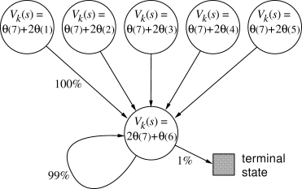
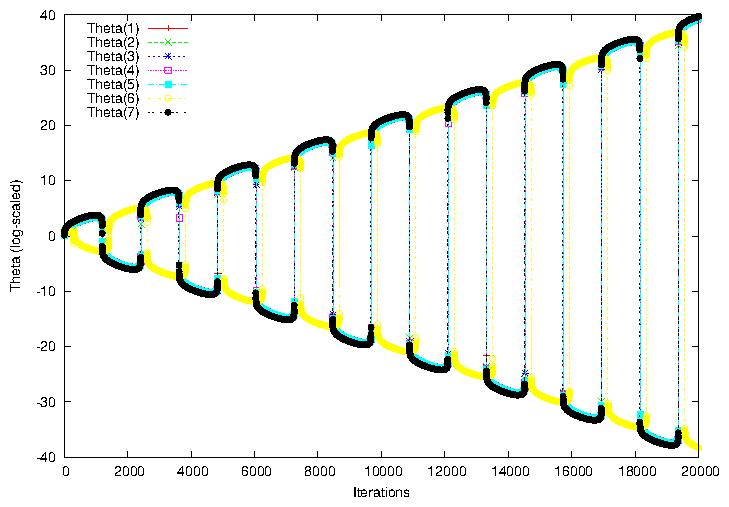
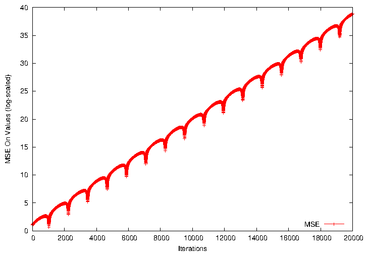
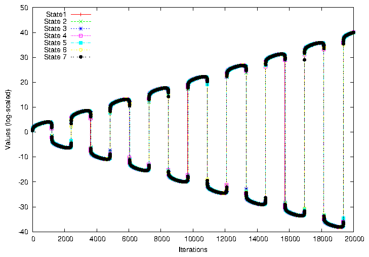
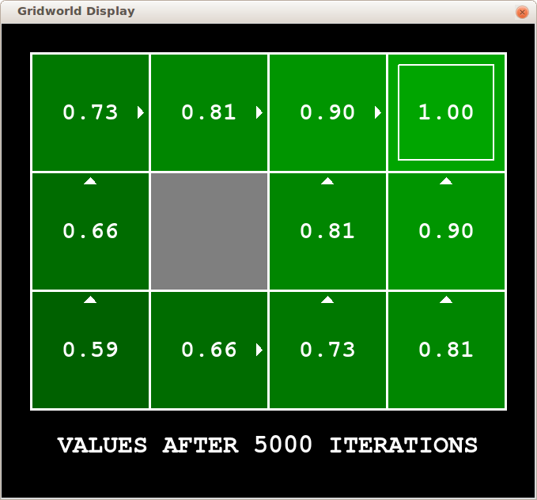
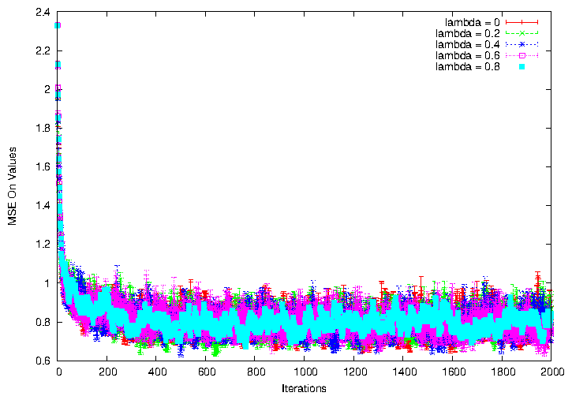

Bootstrapping With Function Approximation
Shun Zhang (sz4554)
The source code is from Reinforcement Learning project of
CS343 Artificial Intelligence
course.
The framework is provided. The Q-learning part was pair programmed by Paul Nguyen and me.
Now I implemented other experiment utility functions based on it for this assignment.
1 Off-Policy Bootstrapping
First, I repeat the experiment of Baird's counterexample. It's a off-policy bootstrapping (using value iteration) with function approximation.
The setting of parameters is same as shown in the book.

Figure 1: Barid's Counterexample from the book.

Figure 2: Barid's Counterexample.
I extend the number of iterations to 20000 (4 times as shown in the book). The pattern keeps going on without convergence.
For convenience of analysis, the graphs below are MSE and values on each iteration.

Figure 3: Barid's Counterexample: MSE on each iteration.

Figure 4: Barid's Counterexample: values of states on each iteration.
We observe that every time θ(1)..θ(5),θ(7) intercept with λ(6), the MSE drops a little.
It is a trial of approaching the correct values, but it's making things worse.
θ(7), here, would affect all the other states when updating a certain states.
This set of θs is chosen on purpose by the author.
Of course, if we initialize them to be 0, or choose other set of (more reasonable) θs, the divergence won't happen.
2 On-Policy Bootstrapping
The book mentions that the nonbootstrapping methods find minimal MSE, while the bootstrapping methods find near-minimal MSE.
I'm comparing the MSE with different λ, which means different level of bootstrapping, in the gridworld.
The gridworld starts from the bottom-left state, and ends in top-right state with reward of +1. No rewards for other state, action pairs.
To apply function approximation, I uses the row number and column number as features to describe a state.
Concretely, θ(0)=1, θ(1)=Row_Number, θ(2)=Column_Number, where θ(0) is bias.
One problem is how to encode the actions - as we need to extract features from a state, action pair. The θ so far only represents the state.
I add or subtract 0.25 on the corresponding θ to encode the action.
For example, on state (1, 2) and taking right action, the features are θ(0)=1, θ(1)=1.25, θ(2)=2.
Obviously, γ = 0.9. The reward of +1 is back-propagated to all the states before.

Figure 5: The values for the Gridworld after convergence, using value iteration.
The setting of θ should make sense. The values are approximately on a plane, where it's higher on the terminal state, lower on the starting state.
I use SARSA(λ) in this model. The following is the graph showing their MSE, compared to optimal values.

Figure 6: MSE For Different λs
It's disappointing that the convergences for different λs are not differed.
I also tried random walk model. It shows a similar performance.
The formula in the book doesn't say that more bootstrapping must lead to higher MSE. It's the bound that can be higher.
I use a constant α, which keeps it fluctuating while not actually converging.
As this is SARSA, in each episode, the agent is trying to fit that specific trace, which neglects values of other states.
File translated from
TEX
by
TTH,
version 4.01.
On 24 Feb 2013, 22:37.